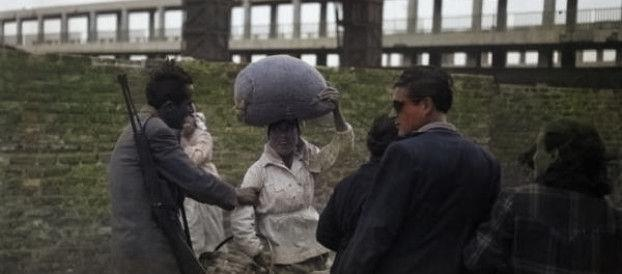
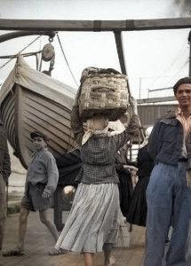

Il vestiario delle donne di Bagnara era composto da diversi elementi e tutti erano utili al trasporto di merce nei lunghi viaggi che percorrevano. L’abbigliamento era composto da una blusa di cotonina, arricciata sotto il seno robusto, detto “u sciammìsciu” e una sottana con mille pieghe fitte e il cui bordo terminava alle caviglie, dove erano visibili, nella stagione invernale, i gambali di lana di capra lavorata ai ferri e i piedi perennemente nudi.
“Chemisio” era il termine che veniva utilizzato per indicare la camicia, “u saju” per indicare la gonna. Quest’ultima aveva una funzione fondamentale poiché nascondeva la presenza di una seconda o più sottogonne, che era ripiegata e rafforzata da doppia cucitura e, tirando una cordicella, essa si stringeva alla vita e lasciava libere le fessure laterali, dette "bandunera". Proprio in quelle fessure venivano nascosti i pacchetti di sale, da 1kg ciascuno, e, durante il lungo viaggio dalla Sicilia, le confezioni spesso si sbriciolavano lasciando cadere il sale al di fuori ma fortunatamente la doppia cucitura non permetteva la dispersione di nemmeno un grammo della merce. In tal modo riuscivano ad evitare i controlli dei finanzieri che, almeno nei primi tempi, non sospettavano nulla ed in parte é dovuto al fisico giunonico che assicurava un’apparenza armoniosa e senza bozzi o sporgenze che potessero suggerire i nascondigli. Infine indossavano “u muccatùri”, un fazzoletto nero annodato sulla testa per ripararsi dal sole e sopra di esso veniva posta “a curùna”, un largo fazzoletto avvolto a forma di corona, utilizzato per poter trasportare carichi massicci sul capo.
Un fatto notevole da sottolineare è che le bagnarote non utilizzavano gioielli in oro, usanza diffusa tra le donne calabresi, poiché credevano che detti accessori abbassassero il valore del loro vestiario. Tutti gli elementi che componevano il costume della bagnarota sono funzionali, vengono indossati perché posso alleggerire o aiutare durante il viaggio o le attività di vendita.
 .jpg)